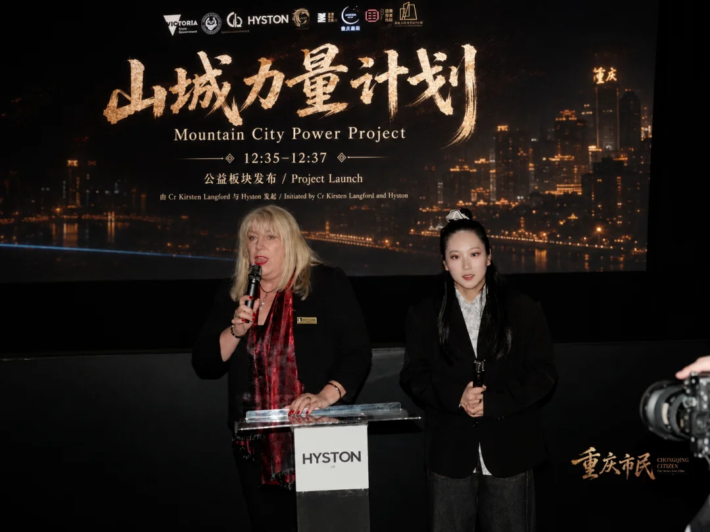
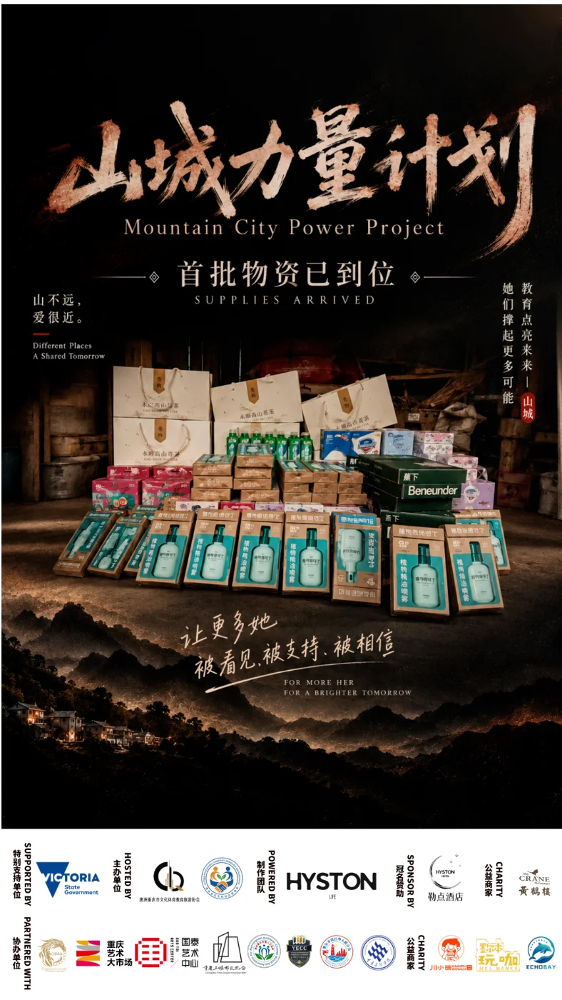
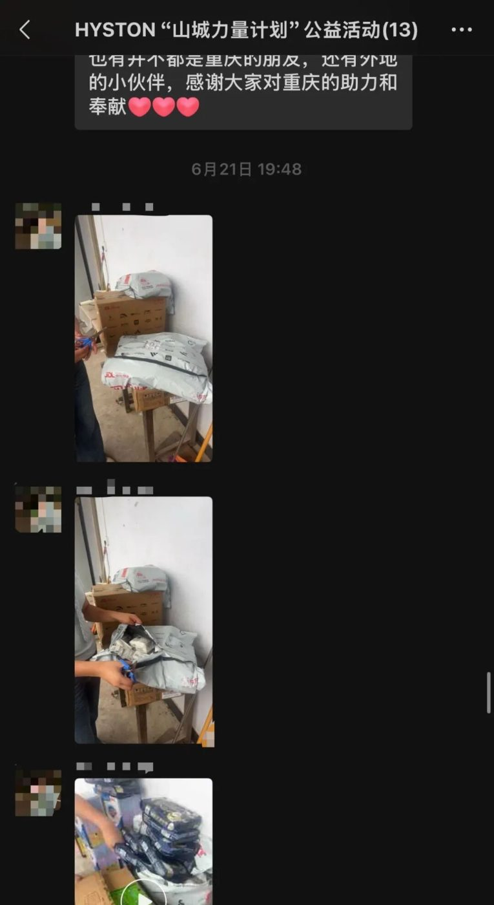
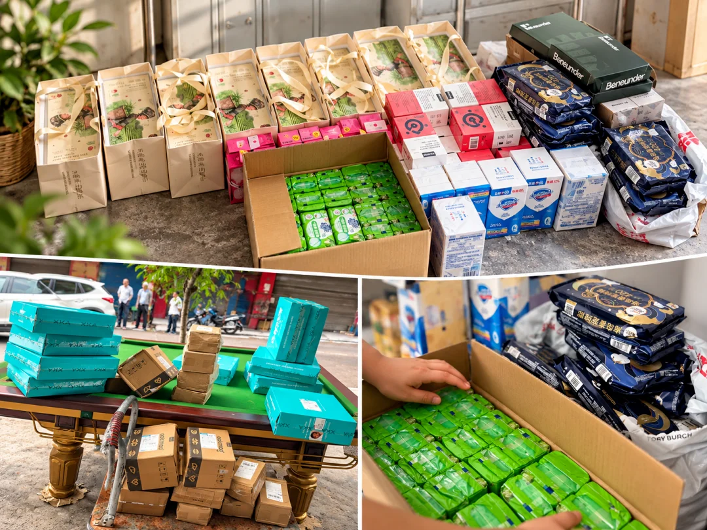
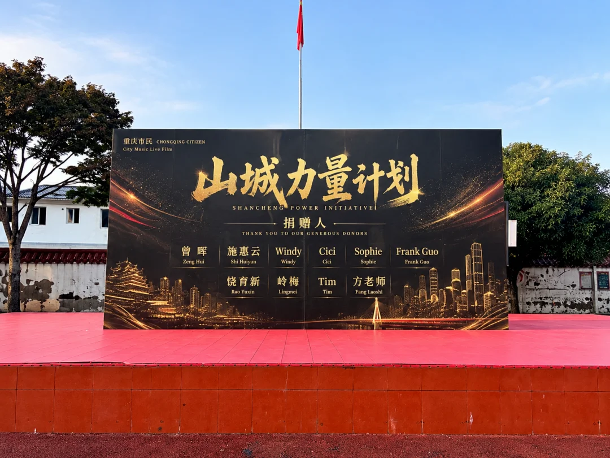

从墨尔本到重庆奉节｜白马市市长出席「山城力量计划」启动活动，首批公益物资抵达
2026年6月18日，「山城力量计划」在墨尔本《重庆市民》活动期间发起。十位爱心人士参与认捐，6月21日物资陆续抵达重庆奉节。协会正式回顾这场跨越山海的公益行动。
「山城力量计划」公益行动回顾
从墨尔本《重庆市民》活动现场，到重庆奉节山区的物资接收点。十位爱心人士共同参与认捐，以实际行动支持家乡教育工作者。澳洲重庆市文化体育教育旅游协会正式回顾「山城力量计划」首阶段公益成果。
【CSETA讯｜墨尔本，2026年10月9日】
2026年6月18日，《重庆市民》城市音乐 Live Film 暨重庆直辖二十九周年庆祝活动在墨尔本唐人街电影院（Chinatown Cinema）举行。来自中澳政界、文化艺术界、社区机构、高校、媒体及青年群体的代表共计300余人齐聚现场。活动以音乐、电影、城市演讲、艺术交流与公益行动为媒介，从墨尔本向重庆送出一封跨越山海的城市回信。本次活动由澳洲重庆市文化体育教育旅游协会发起并主办，维州多元文化社区促进会联合主办，HYSTON LIVE 制作，并获得维多利亚州政府支持，勒点酒店提供冠名支持。澳洲重庆市商会、重庆艺术大市场、国泰艺术中心、重庆三峡移民博物馆、重庆文理学院等机构参与协作与支持。
活动现场也留下了十位爱心人士的名字。那是澳洲重庆市文化体育教育旅游协会（CSETA）发起的「山城力量计划」（Mountain City Power Initiative）公益行动。
这项倡议从澳大利亚出发，面向中国重庆山区的教育工作者，希望通过社区爱心人士的自愿参与，为当地教师提供切合实际需要的生活物资支持。
在活动期间，项目得到维多利亚州白马市（City of Whitehorse）市长 Kirsten Langford 的关注与支持，并作为协会社区文化交流与公益实践的一部分对外发起。

如今，首批物资的采购、寄送与当地接收工作已经取得实际进展。项目群中留下的采购记录、订单凭证、包裹照片与接收反馈，让一份跨越国界的善意，有了真实而具体的回响。
值此项目阶段性总结之际，协会希望再次向所有参与者致以感谢。
尤其是当初写在展板上的十位捐赠人。
他们的名字，值得被郑重记录。
01｜十位捐赠人，一份共同的山城牵挂
在2026年6月18日的活动现场，「山城力量计划」特别设置了捐赠人感谢展板，以此记录支持本次公益行动的爱心人士。
根据现场展板，十位捐赠人分别为：
曾晖 Zeng Hui
施惠云 Shi Huiyun
Windy
Cici
Sophie
Frank Guo
饶育新 Rao Yuxin
岭梅 Lingmei
Tim
方老师 Fang Laoshi
这些名字，没有按照捐赠金额区分先后，也不代表贡献大小。
他们来自不同的工作与生活背景，因为对重庆的共同牵挂，参与了同一项公益行动。
有人主动认捐，有人负责协调，有人直接下单采购，有人帮助联系当地教师、确认物资需求，还有人持续追踪物流与收货情况。
不同的参与方式，最终指向同一个目标：
让身在澳大利亚的人们，有机会为远在重庆山区的教育工作者做一些实际的事情。
协会由衷感谢每一位捐赠人。
正是这些来自个人的主动参与，让「山城力量计划」从一项活动倡议，逐渐发展成为一次有实际物资、有采购记录、有接收反馈的公益实践。

02｜为什么是重庆山区的老师？
重庆是一座山城。
山川塑造了这座城市的地理，也影响着不同地区居民的日常生活。
在重庆的部分山区，教师不仅承担课堂教学工作，也需要适应当地的工作环境与生活条件。
对于长期在山区工作的教育工作者而言，一些普通而实用的生活用品，同样能够带来直接的帮助。
「山城力量计划」因此将首阶段支持重点放在教育工作者的日常需求上。
项目并没有预先决定所有捐赠品类，而是通过与重庆当地人员沟通，了解教师群体实际需要的物品，再结合捐赠人的预算与采购能力进行安排。
在沟通过程中，防晒、防蚊、个人卫生及日常生活用品逐渐成为本轮支持的重点。
这也体现了项目发起时的一项基本理念：
公益不只是给予，更需要先了解对方真正需要什么。
一把防晒伞、一份防蚊用品、一件个人卫生用品，或许并不是能够改变一座城市的大事。
但对于具体的人而言，这些物品有真实的使用场景，也能在日常生活中发挥作用。
协会希望通过小规模、需求导向的物资支持，让海外社区的爱心得以更加直接地抵达需要的人群。
03｜从认捐到采购：Windy老师的用心与行动
公益项目的发起只是开始。
活动结束后，真正需要时间与耐心的，是物资采购和执行过程。
本次「山城力量计划」中，捐赠人Windy老师主动承担了重要的采购协调工作。
她与重庆当地王老师保持沟通，了解教师人数、物资需求与实际使用情况，并在参与者提出的采购建议基础上，对不同品类、规格与数量进行整理。
项目讨论中，大家曾提出是否可以由多人共同认捐、统一采购，以减少重复购买，并让实际物资更符合当地需求。
Windy老师积极回应了这一建议。
她表示，可以根据最终确认的金额和需求统一下单，并将采购信息、订单与费用情况反馈给参与者。
整个过程中，团队并没有追求采购数量越多越好，而是尽可能考虑实际使用场景、商品规格及采购安排。
根据Windy老师在项目群中的最终汇报，本批集中采购共涉及六类物资：
采购类别
数量
采购金额
防晒晴雨伞
20份
¥900
驱蚊精油
20份
¥798
防晒口罩
20份
¥580
防晒喷雾
10份
¥790
补血软糖
7份
¥629.30
莓茶
10份
¥1,280
合计
¥4,977.30
本批采购中，Windy老师收到参与者交托的爱心款项共计人民币4,500元。
最终采购总额达到人民币4,977.30元，超出部分477.30元，由Windy老师自行承担。
她在向群内汇报时写道：
“费用全部用于采购，额外多的部分，我的一份心意。”
在这句话背后，是从前期需求沟通、选品、下单，到后期整理订单与反馈所付出的时间和精力。
这样的工作通常并不出现在活动主舞台上，却是公益项目能够真正推进的重要部分。
协会特别感谢Windy老师的主动担当，也感谢将认捐款项交托她协助采购的各位参与者。
一份善意能够落地，不仅需要热情，也离不开有人愿意认真完成那些琐碎而必要的工作。
04｜从澳大利亚的认捐，到重庆的实际包裹
在本次公益行动中，除了参与集中采购，也有爱心人士选择直接购买物资并寄往重庆。
捐赠人曾晖女士按照活动期间约100澳元等值物资的认捐承诺，自行采购了总计人民币534.98元的生活用品。
采购内容包括卫生巾、香皂等日常用品，并直接安排寄送至重庆市奉节县公平镇西龙村驿站。
整个过程没有经过协会或HYSTON的资金中转。
从选购商品到确认订单，再到直接发往当地接收点，这批物资体现了本次公益行动所倡导的直接参与方式。
随后，项目群中陆续出现了来自重庆当地的接收反馈。
工作人员分享了物资到货、包裹拆箱与整理的照片和视频，并向捐赠人表达感谢。
这些画面与采购订单共同记录了物资从认捐到抵达接收点的过程。
过去，在墨尔本活动现场讨论的，是希望帮助远方的教师。
而当物流抵达，大家看到的已经不再是抽象的倡议。
是一箱箱实际购买的生活用品。
是一份可以追踪的寄送记录。
也是当地人员发回的一句：
“收到了第一部分物资，感谢大家。”

从澳大利亚到中国，从活动现场到山区接收点，公益行动因此有了更加具体的成果。
根据现有记录，本轮物资已取得采购、寄送及当地接收反馈。后续具体发放与教师个人领取情况，仍应以当地实际确认资料为准。

05｜透明、直接，是这次公益行动坚持的方式
「山城力量计划」在执行方式上采用了与传统集中募款不同的安排。
本次认捐款项没有经过澳洲重庆市文化体育教育旅游协会或HYSTON的银行账户。
协会与HYSTON主要承担活动发起、社区连接、信息沟通与资源协调等工作。
实际捐赠由参与者自愿完成。
其中，部分捐赠人委托Windy老师协助集中采购；另有捐赠人自行选购商品，直接寄往当地接收点。
因此，本次涉及的个人采购金额并不属于协会或HYSTON的经营收入，也不应被理解为协会统一收取并管理的现金捐款。
协会和HYSTON亦未从本轮物资认捐中收取管理费用。
在项目推进过程中，参与者通过群内沟通保留了采购明细、订单截图、物资照片和收货反馈。
这些记录既是对爱心人士的回应，也让整个执行过程拥有更加清晰的依据。
协会认为，一项社区公益行动的价值，不应只通过最终金额衡量。
同样重要的，是捐赠过程是否清楚、物资是否符合需求、参与者是否得到真实反馈，以及受助者是否受到尊重。
让每一份善意都有清楚的去向，是对捐赠人的尊重，也是对公益本身的责任。

06｜从文化交流到实际行动，海外社区与家乡的另一种连接
澳洲重庆市文化体育教育旅游协会长期关注重庆与澳大利亚之间的文化、体育、教育和旅游交流。
从《重庆市民》城市音乐 Live Film，到各类社区文化活动，协会希望通过不同形式，让海外华人与家乡建立更有温度的联系。
但文化交流的意义，并不止于舞台、音乐、展览或一次相聚。
它也可以延伸到更具体的社区关怀。
「山城力量计划」正是一次这样的尝试。
在墨尔本，人们通过《重庆市民》感受城市文化、分享乡情与共同记忆。
而在同一场活动中，十位爱心人士通过认捐，开始了另一种连接家乡的方式。
从共同欣赏一部关于重庆的影像作品，到主动关心重庆山区教育工作者的日常生活。
从对一座城市的感情，到对这座城市里具体的人的支持。
这让协会看到，海外社区的文化凝聚力，可以进一步转化为实际行动力。
不一定需要庞大的公益机构或复杂的募款架构。
只要有明确的需求、愿意参与的人，以及认真负责的执行和反馈，就有机会让一份善意走得更远。
07｜向所有参与者，致以正式的感谢
在本次「山城力量计划」阶段性总结中，协会再次郑重感谢十位捐赠人：
致谢｜每一份善意，都值得被记得
在本次「山城力量计划」阶段性总结中，澳洲重庆市文化体育教育旅游协会再次向十位捐赠人致以诚挚感谢：
曾晖、施惠云、Windy、Cici、Sophie、Frank Guo、饶育新、岭梅、Tim、方老师。
感谢大家自愿认捐，让这项公益倡议拥有了实际行动的基础，也让来自澳大利亚的关心能够转化为送往重庆山区的生活物资。
特别感谢 Windy 老师在需求沟通、集中采购、订单整理与执行反馈中承担的重要协调工作。从了解当地教师的需要，到逐项完成物资采购，她付出的时间、耐心与个人支持，是项目能够顺利推进的重要力量。
感谢曾晖女士等爱心人士亲自选购、寄送生活物资，以实际行动兑现认捐承诺。
协会同时特别感谢 HYSTON 团队的七位成员：Daisy、Astrid、Brooke、Tina、Zoey、Joanne 和 Aria。
感谢团队在项目筹备、活动组织与公益协作过程中给予的支持。公益行动的背后，不仅有舞台上的倡议与捐赠人的爱心，也有许多不曾站在聚光灯下，却同样认真投入时间与精力的人。
HYSTON 为本次行动提供了团队与组织支持，没有经手捐赠款项。团队成员的参与，让这项从墨尔本发起的公益倡议得以获得实际的协调与执行支持。
感谢重庆当地王老师及其他协助沟通需求、接收和整理物资的人员，让远道而来的包裹能够顺利进入当地接收流程。
同时，协会感谢维多利亚州白马市市长 Kirsten Langford 对《重庆市民》活动及相关社区公益倡议的关注和支持，为澳大利亚多元文化社区与重庆之间的交流提供了积极回应。
从十位捐赠人的自愿认捐，到 Windy 老师的采购协调，从 HYSTON 团队的幕后支持，到重庆当地工作人员的接收配合，每一个环节都凝聚着不同人的付出。
公益从来不是一个人的独角戏，而是一群人愿意为同一件事，认真完成自己能够完成的那一部分。
协会谨向所有参与「山城力量计划」的朋友致以诚挚谢意。
山海有距离，善意有回响。
08｜让山城的力量，继续传递
「山城力量计划」首阶段的执行，也为协会未来开展社区公益项目积累了经验。
首先，公益应当从真实需求出发。
充分了解支持对象的生活与工作情况，才能减少不必要的重复采购，让有限的物资发挥实际作用。
其次，公益参与可以有不同方式。
无论是自行采购、联合认捐、协助物流，还是负责需求沟通与接收反馈，都能够成为项目的重要组成部分。
再次，公益项目应当重视过程记录。
除了发起与宣传，更需要向参与者说明物资购买了什么、如何寄送、已经到达哪里，以及后续还有哪些事项需要确认。
未来，协会希望继续根据重庆当地社区的实际需求，探索小规模、透明、可追踪的公益协作机制，让更多身在海外、有意愿参与家乡建设与社区关怀的人士找到实际参与方式。
这次行动并非一项规模庞大的援助计划。
但它已经让一群生活在澳大利亚的人，以自己的方式回应了远方真实存在的需要。
这也正是「山城力量计划」最初希望实现的事情。
让海外乡情，不只停留在记忆里。
让人与故乡的联系，也体现在实实在在的行动中。
尾声｜一份迟到的感谢
从2026年6月18日正式发起，到物资采购、寄送与当地反馈，再到今天的总结回顾，「山城力量计划」已经走过了它的第一个阶段。
一份公益行动的成果，不仅是一张采购清单，也不仅是一组收货照片。
更是有人愿意为远方的陌生人付出时间，愿意认真了解他们的需要，并把一句承诺变成实际行动。
这份总结来得稍晚，但我们希望每一位参与者都知道：
你们的支持，协会记得。
那些认真完成的采购与寄送，我们记得。
那块写有十个名字的展板，也会成为协会公益记录的一部分。
再次感谢十位捐赠人。
曾晖、施惠云、Windy、Cici、Sophie、Frank Guo、饶育新、岭梅、Tim、方老师。
谢谢你们。
从墨尔本到重庆奉节，山海相隔，心意相连。
让山城的力量，在每一次真实的行动中继续传递。
澳洲重庆市文化体育教育旅游协会
Chongqing Culture Sports Education Tourism Association of Australia
山城力量计划
Mountain City Power Initiative
项目启动：2026年6月18日
启动地点：澳大利亚墨尔本
物资支持地区：中国重庆市奉节县
项目形式：社区自愿认捐、实物采购与直接寄送
回访日期：2026年10月9日
以文化连接家乡，以行动回应需要。
The Mountain City Power Initiative was launched on 18 June 2026 during the Chongqing Citizens (《重庆市民》) event in Melbourne, with ten donors pledging their support and supplies beginning to arrive in Fengjie, Chongqing, on 21 June. The Association now presents its formal review of this charitable initiative connecting communities across great distances. Mountain City Power Initiative: A Review of Our Community Giving From the Chongqing Citizens event in Melbourne to a supplies reception point in the mountainous area of Fengjie, Chongqing, ten donors came together to support educators in their hometown through practical action. The Chongqing Culture Sports Education Tourism Association of Australia presents this formal review of the first phase of the Mountain City Power Initiative. [CSETA News | Melbourne, 9 October 2026] On 18 June 2026, ten donors’ names were recorded at the Chongqing Citizens city music Live Film event in Melbourne. They were supporting the Mountain City Power Initiative, a charitable initiative launched by the Chongqing Culture Sports Education Tourism Association of Australia (CSETA). Originating in Australia, the initiative focused on educators in the mountainous areas of Chongqing, China. Through the voluntary participation of community members, it aimed to provide local teachers with everyday supplies suited to their practical needs. During the event, the initiative received attention and support from Kirsten Langford, Mayor of the City of Whitehorse in Victoria at the time. It was publicly launched as part of the Association’s community cultural exchanges and charitable activities. Since then, tangible progress has been made in purchasing, dispatching and locally receiving the first batch of supplies. Purchase records, order receipts, parcel photographs and receipt updates shared in the project group have given this cross-border gesture of goodwill a concrete and meaningful expression. As we review this stage of the initiative, the Association would like to thank everyone who took part once again. In particular, we wish to recognise the ten donors whose names appeared on the display board at the launch. Their names deserve to be recorded with care and appreciation. 01 | Ten Donors, One Shared Connection to Chongqing At the event on 18 June 2026, the Mountain City Power Initiative featured a donor appreciation board recognising those who supported this charitable effort. The ten donors named on the board were: Zeng Hui (曾晖) Shi Huiyun (施惠云) Windy Cici Sophie Frank Guo Rao Yuxin (饶育新) Lingmei (岭梅) Tim Fang Laoshi (方老师) These names were not ordered by donation amount, nor did their order indicate the relative value of anyone’s contribution. The donors came from different professional and personal backgrounds. A shared connection to Chongqing brought them together in the same charitable initiative. Some volunteered to pledge support. Others helped coordinate the work, placed purchase orders themselves, contacted local teachers to confirm their needs, or continued to track deliveries and receipt of the supplies. These different forms of participation served a common goal: to give people living in Australia an opportunity to offer practical support to educators in the mountainous areas of Chongqing, far from where they now live. The Association sincerely thanks every donor. It was their voluntary personal involvement that helped the Mountain City Power Initiative grow from an event proposal into a charitable effort with actual supplies, purchase records and confirmation of local receipt. 02 | Why Teachers in Chongqing’s Mountainous Areas? Chongqing is a mountain city. Its mountains and rivers have shaped its geography and continue to influence everyday life across its different districts and regions. In some of Chongqing’s mountainous areas, teachers must manage both their classroom responsibilities and the demands of local working and living conditions. For educators who spend years working in these areas, ordinary, practical everyday items can also provide direct assistance. The first phase of the Mountain City Power Initiative therefore focused on educators’ day-to-day needs. Rather than deciding on every category of donated goods in advance, the project consulted people in Chongqing to understand what teachers actually needed. Purchases were then arranged in line with donors’ budgets and purchasing capacity. Through these discussions, sun protection, mosquito protection, personal hygiene products and other everyday supplies emerged as the priorities for this round of support. This approach reflected a principle behind the initiative from the outset: charitable giving involves more than providing something; it also requires first understanding what people genuinely need. A sun-protection umbrella, a mosquito-repellent product or a personal hygiene item may not transform a city. For the person using it, however, each has a practical place in everyday life and can make a useful difference. Through small-scale, needs-led material support, the Association hopes to help the goodwill of the overseas community reach those who need it more directly. 03 | From Pledges to Purchases: Windy’s Care and Commitment Launching a charitable initiative is only the beginning. After the event, the purchasing and implementation work required real time and patience. For this Mountain City Power Initiative, donor Windy volunteered to take on an important role in coordinating purchases. She stayed in touch with Teacher Wang in Chongqing to understand the number of teachers, the supplies needed and how the items would be used. Drawing on participants’ purchasing suggestions, she organised the different product categories, specifications and quantities. During project discussions, participants suggested combining pledges and placing coordinated orders to reduce duplicate purchases and ensure that the supplies better matched local needs. Windy welcomed the suggestion. She said that she could place consolidated orders based on the final confirmed funds and requirements, then share purchasing information, orders and expenses with participants. Throughout the process, the team’s priority was not simply to buy as many items as possible. It sought to take account of practical use, product specifications and purchasing arrangements. According to Windy’s final report in the project group, this batch of coordinated purchases covered six categories: - Sun- and rain-protection umbrellas: 20 units, RMB 900 - Mosquito-repellent essential oil: 20 units, RMB 798 - Sun-protection face masks: 20 units, RMB 580 - Sunscreen spray: 10 units, RMB 790 - Blood-nourishing gummies: 7 units, RMB 629.30 - Meicha tea (莓茶): 10 units, RMB 1,280 Total: RMB 4,977.30 For these purchases, Windy received a total of RMB 4,500 entrusted to her by participants. The final purchase cost was RMB 4,977.30. Windy personally covered the additional RMB 477.30. In her report to the group, she wrote: “All the funds went towards the purchases. The extra amount is my personal contribution.” Behind those words were the time and effort spent discussing needs, selecting products, placing orders, organising the records and reporting back. Such work rarely appears on an event’s main stage, yet it is an essential part of turning a charitable initiative into action. The Association is especially grateful to Windy for taking on this responsibility, and to everyone who entrusted their pledged funds to her for the coordinated purchases. For goodwill to become practical support, enthusiasm must be accompanied by people willing to complete the small but necessary tasks with care. 04 | From Pledges in Australia to Parcels Received in Chongqing Alongside the coordinated purchases, some donors chose to buy supplies themselves and arrange delivery to Chongqing. In keeping with her pledge at the event to provide goods worth approximately AUD 100, Ms Zeng Hui independently purchased everyday supplies totalling RMB 534.98. The items included sanitary pads, bar soap and other daily necessities. She arranged for them to be sent directly to the reception station in Xilong Village, Gongping Town, Fengjie County, Chongqing. No funds passed through the Association or HYSTON during this process. From selecting goods and confirming orders to arranging delivery to the local reception point, these purchases reflected the direct participation encouraged by the initiative. Updates confirming local receipt subsequently began appearing in the project group. Local personnel shared photographs and videos of supplies arriving, parcels being opened and items being organised. They also expressed their thanks to the donors. Together with the purchase orders, these images documented the journey from a pledge of support to the supplies’ arrival at the reception point. At the Melbourne event, participants had discussed their hope of helping teachers far away. Once deliveries arrived, the initiative took a tangible form: Boxes of everyday supplies that had actually been purchased. Traceable delivery records. And a message from the local team: “We have received the first batch of supplies. Thank you, everyone.” Connecting Australia and China, and the event venue with a mountain-area reception point, the initiative had begun to produce concrete results. The records currently available document purchases, dispatch and local receipt of this round of supplies. Further distribution and receipt by individual teachers remain subject to confirmation through local records. 05 | Transparency and Direct Participation in Practice The Mountain City Power Initiative used an approach that differed from traditional centrally managed fundraising. The pledged funds did not pass through the bank accounts of either the Chongqing Culture Sports Education Tourism Association of Australia or HYSTON. The Association and HYSTON primarily handled the launch, community connections, communication and resource coordination. Participants made their donations voluntarily. Some donors entrusted Windy with coordinating purchases on their behalf. Others selected and bought products themselves and sent them directly to the local reception point. The amounts spent on these personal purchases therefore do not constitute operating revenue for the Association or HYSTON. Nor should they be understood as cash donations collected and centrally managed by the Association. Neither the Association nor HYSTON charged a management fee for this round of pledged supplies. As the project progressed, participants retained purchasing details, order screenshots, photographs of the supplies and receipt updates through communications in the group. These records provided donors with feedback and gave the implementation process a clearer documented basis. The Association believes that the value of a community charitable initiative should not be measured solely by its final monetary total. Equally important are whether the donation process is clear, whether the goods meet actual needs, whether participants receive genuine feedback and whether the people receiving support are treated with respect. Ensuring that every contribution has a clear destination shows respect for donors and responsibility towards the charitable work itself. 06 | From Cultural Exchange to Practical Action: Another Connection Between the Overseas Community and Home The Chongqing Culture Sports Education Tourism Association of Australia has long been committed to cultural, sporting, educational and tourism exchanges between Chongqing and Australia. Through the Chongqing Citizens city music Live Film and a range of community cultural activities, the Association seeks to help overseas Chinese communities build warmer, more personal connections with their hometown. The significance of cultural exchange extends beyond performances, music, exhibitions and gatherings. It can also grow into more practical forms of community care. The Mountain City Power Initiative was one such effort. In Melbourne, Chongqing Citizens offered people a way to experience the city’s culture and share their attachment to home and their collective memories. At the same event, ten donors began another kind of connection with their hometown by pledging practical support. A shared appreciation of a film about Chongqing developed into an active interest in the daily lives of educators in its mountainous areas. Affection for a city became support for individual people living there. This showed the Association how the cultural bonds within an overseas community can translate into practical action. Such efforts do not necessarily require a large charitable organisation or a complex fundraising structure. With clearly identified needs, willing participants, responsible implementation and reliable feedback, goodwill can reach further. 07 | Our Formal Thanks to Everyone Who Took Part In this review of the first phase of the Mountain City Power Initiative, the Association once again formally thanks all ten donors: Zeng Hui, Shi Huiyun, Windy, Cici, Sophie, Frank Guo, Rao Yuxin, Lingmei, Tim and Fang Laoshi. Thank you for the trust and support you offered during the event. Thank you for pledging voluntarily and providing the basis for this charitable proposal to become practical action. We extend particular thanks to Windy for her important coordination work in discussing needs, organising purchases, compiling order records and reporting on implementation. We thank Ms Zeng Hui and the other donors who personally selected and arranged delivery of everyday supplies. We thank Teacher Wang in Chongqing and everyone who helped communicate needs, receive deliveries and organise the goods, enabling the parcels to move smoothly through the local reception process. The Association also thanks Kirsten Langford for the attention and support she gave to the Chongqing Citizens event and its associated community charitable initiatives as Mayor of the City of Whitehorse at the June event. Her support provided an encouraging response to exchanges between Australia’s multicultural communities and Chongqing. Each person participated in a different way, and every contribution formed part of the result. From a pledge to an actual purchase. From an order to cross-border shipping. From an initiative launched in Melbourne to confirmation of local receipt in Chongqing. It was the participants’ mutual trust and cooperation that connected these stages. 08 | Keeping the Mountain City’s Spirit of Giving Alive The first phase of the Mountain City Power Initiative has also given the Association experience to draw on in future community charitable projects. First, charitable work should begin with genuine needs. Understanding the living and working circumstances of those being supported helps reduce unnecessary duplicate purchases and ensures that limited supplies serve a practical purpose. Second, there are different ways to take part. Buying supplies independently, combining pledges, helping with logistics, communicating needs and providing receipt updates can all be important parts of a project. Third, charitable initiatives should place importance on documenting the process. Beyond launching and promoting an initiative, participants need to know what was purchased, how it was sent, where it has arrived and which matters still require confirmation. In future, the Association hopes to continue exploring small-scale, transparent and traceable ways of working together on charitable activities, guided by the actual needs of local communities in Chongqing. The aim is to give more people living overseas practical ways to contribute to their hometown and care for its communities. This was not a large-scale aid programme. It nevertheless enabled a group of people living in Australia to respond, in their own ways, to genuine needs far away. That was what the Mountain City Power Initiative hoped to achieve from the beginning: To give overseas communities a way to express their attachment to home beyond memory. To make the connection between people and their hometown visible in practical action. Closing | A Belated Thank You From its formal launch on 18 June 2026, through purchasing, dispatch and local feedback, to today’s review, the Mountain City Power Initiative has completed its first phase. The outcome of a charitable initiative is more than a purchase list or a collection of delivery photographs. It also lies in people being willing to give their time to strangers far away, to understand their needs with care and to turn a promise into action. This review comes a little late, but we want every participant to know: The Association remembers your support. We remember the care taken with every purchase and delivery. The display board bearing those ten names will also become part of the Association’s record of its charitable work. Once again, we thank all ten donors: Zeng Hui, Shi Huiyun, Windy, Cici, Sophie, Frank Guo, Rao Yuxin, Lingmei, Tim and Fang Laoshi. Thank you. From Melbourne to Fengjie, Chongqing, mountains and seas may separate us, but goodwill connects us. May the strength of the Mountain City continue to be shared through every act of genuine care. Chongqing Culture Sports Education Tourism Association of Australia Mountain City Power Initiative Project launch: 18 June 2026 Launch location: Melbourne, Australia Area supported: Fengjie County, Chongqing, China Project model: Voluntary community pledges, purchases of goods and direct delivery Follow-up review date: 9 October 2026 Connecting with home through culture. Responding to needs through action.